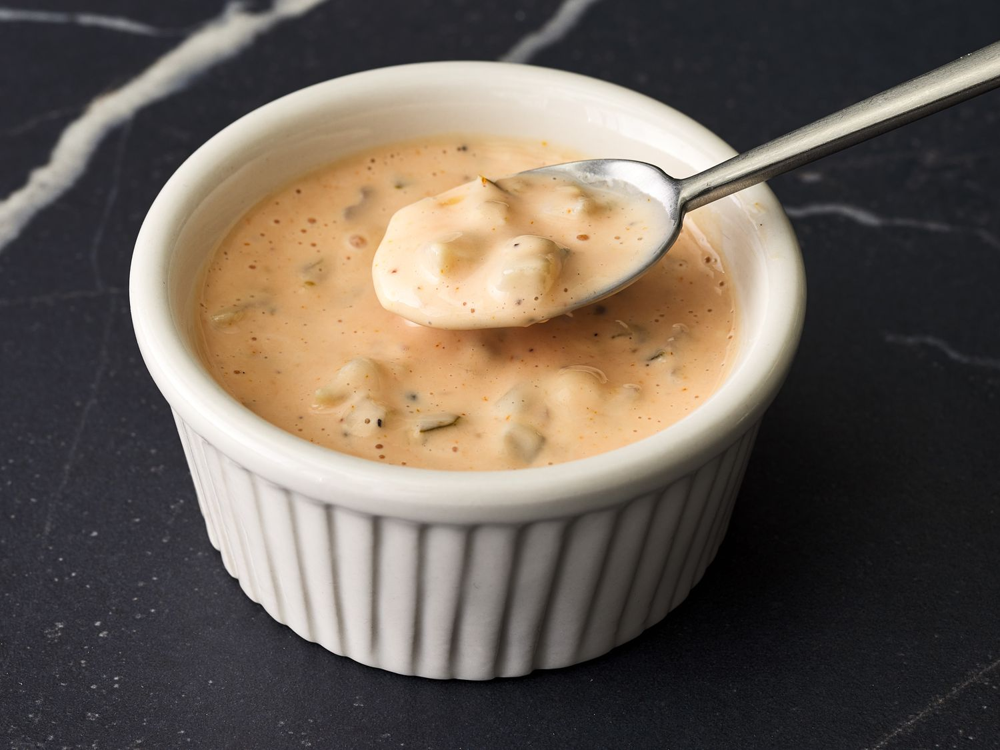

Back to All Recipes
The Secret Burger Sauce

Don't you just love the special sauce for burgers you can get from restaurants and fast food joints? Well, we do!
Put this secret sauce on your burgers instead of the regular mayo and ketchup mixture. We love to dip our French fries in it too.
The Secret Burger Sauce is exactly what you need to take your Burger, or even your Burger Dog to the next level!
Here's what you'll need:
- ½ cup mayonnaise
- ½ cup chopped dill pickles
- ¼ cup ketchup
- 1 teaspoon garlic powder
- ½ teaspoon black pepper
Steps:
- Gather all ingredients.
- Stir together mayonnaise, pickles, ketchup, garlic powder, and pepper in a bowl until well combined.